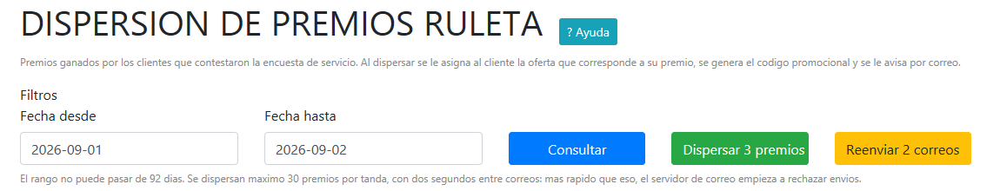
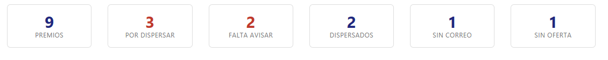
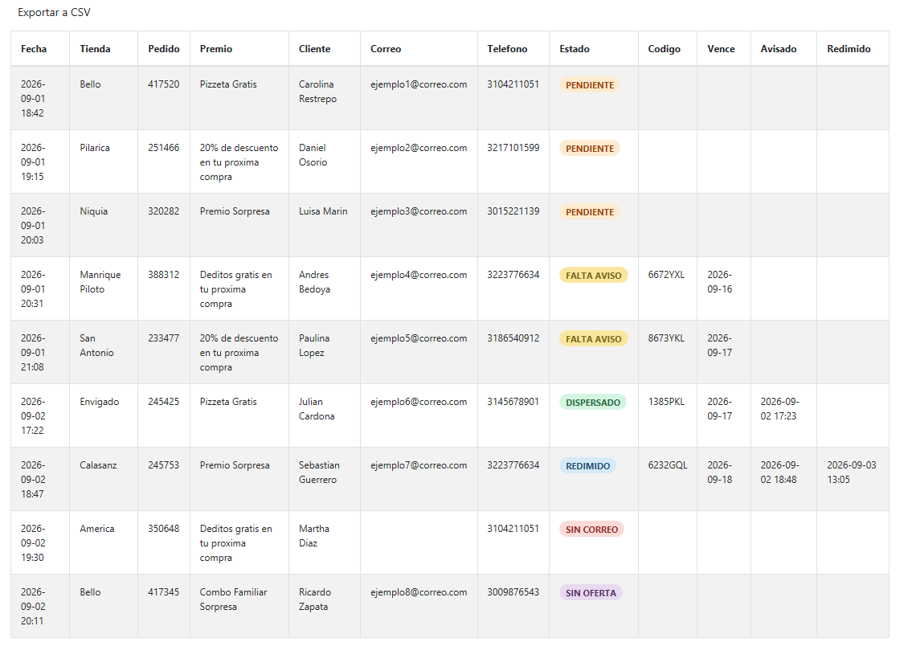

Cuando un cliente contesta la encuesta de servicio, como agradecimiento puede jugar en la ruleta de premios de la página web. Si gana, hay que hacerle dos cosas: asignarle la oferta que corresponde a su premio y avisarle con el código para que lo pueda reclamar.
Antes eso se hacía cliente por cliente a mano: buscarlo en la administración de clientes, agregarle la oferta y escribirle. Esta pantalla lo hace por rango de fechas y con un botón.
Dispersar un premio significa tres cosas, todas juntas:
aaaa-mm-dd o usar el calendario.Al abrir, la pantalla trae por defecto ayer y hoy, que es lo que normalmente se revisa: la ruleta se juega poco después del pedido.

Después de consultar aparecen seis cifras. Son el resumen de lo que hay en ese rango.

| Contador | Qué significa |
|---|---|
| Premios | Total de premios ganados en el rango. Solo cuenta los que sí son premio: "Gira de nuevo" y "Sin premio" no aparecen en esta pantalla. |
| Por dispersar | Premios listos para entregar. Es el número que habilita el botón Dispersar premios. Si está en cero, no hay nada que hacer. |
| Falta avisar | Premios que ya tienen oferta y código, pero al cliente no le llegó el correo. Habilita el botón Reenviar correos. Ver la sección 6. |
| Dispersados | Premios ya entregados. Incluye los que se entregaron a mano antes de que existiera esta pantalla. |
| Sin correo | Ganadores de los que no tenemos correo por ninguna vía. No se les puede avisar automáticamente. Ver la sección 7. |
| Sin oferta | Premios que no tienen configurada la oferta que les corresponde. Es un problema de configuración, no del cliente. Ver la sección 7. |

| Columna | Qué muestra |
|---|---|
| Fecha | Cuándo jugó el cliente en la ruleta. |
| Tienda | Tienda del pedido que originó la encuesta. |
| Pedido | Número del pedido en la tienda. |
| Premio | El premio tal como lo vio el cliente girar en la ruleta. |
| Cliente | Nombre del ganador. |
| Correo | Correo al que se le envía o se le envió el premio. |
| Teléfono | Celular del ganador. |
| Estado | En qué va ese premio. Ver la sección 5. |
| Código | Código promocional que el cliente presenta para redimir. Aparece solo después de dispersar. |
| Vence | Hasta cuándo puede usar el código. |
| Avisado | Cuándo le salió el correo. Si está vacío y el premio ya se dispersó, el cliente no se enteró. |
| Redimido | Cuándo el cliente usó su premio. Vacío significa que todavía no lo ha reclamado. |
La tabla se puede ordenar haciendo clic en los títulos, buscar con el campo Buscar, y cambiar cuántos registros se ven a la vez.
El botón Exportar a CSV baja un archivo con todo lo consultado, no solo lo que se ve en la página actual. Se abre en Excel con las tildes correctas.
| Estado | Qué significa y qué hacer |
|---|---|
| PENDIENTE | El premio está listo para entregar y no se ha hecho. Es el único estado que se dispersa. |
| DISPERSADO | Ya se le asignó la oferta y le llegó el correo con el código. No hay nada que hacer. |
| FALTA AVISO | La oferta y el código existen, pero el correo no salió. El cliente tiene un premio del que no se enteró. Use Reenviar correos. |
| ENTREGADO A MANO | Premio entregado manualmente antes de que existiera esta pantalla. De estos no tenemos código ni fecha de aviso, por eso esas columnas salen vacías. No se pueden dispersar de nuevo. |
| SIN CORREO | No tenemos un correo válido del ganador. El sistema no puede avisarle. Ver la sección 7. |
| SIN OFERTA | A ese premio le falta configurar cuál oferta le corresponde. No se dispersa hasta que se configure. Ver la sección 7. |
| REDIMIDO | El cliente ya usó su premio. Es el final feliz del proceso. |
Para asignarle una oferta, el ganador tiene que existir como cliente. El sistema lo busca primero por el pedido, luego por el teléfono, y si no lo encuentra lo crea con el nombre, el teléfono y el correo que el propio cliente escribió al jugar. Por eso el resumen dice cuántos clientes se crearon.
Un solo correo con todo: el agradecimiento por contestar, el premio que ganó, el código en grande y la fecha exacta de vencimiento. Trae también las condiciones para reclamarlo y el teléfono del contact center.
En los premios cuyo nombre no dice en qué consisten —el caso de Premio Sorpresa— el correo incluye una línea que lo explica.
El contador Falta avisar y el estado FALTA AVISO señalan lo mismo: premios con oferta y código asignados a los que el correo no les salió. Pasa cuando el servidor de correo rechaza el envío.
Presione Reenviar correos. El botón le dice cuántos son, por ejemplo "Reenviar 4 correos".
Son ganadores de los que no tenemos correo por ninguna vía. Tienen nombre y celular, pero no dirección de correo, así que el sistema no puede avisarles y quedan esperando. Estos casos hay que atenderlos por fuera: llamarlos o escribirles por WhatsApp con los datos de la tabla.
Significa que se agregó un premio nuevo a la ruleta y nadie configuró con cuál oferta se entrega. Esto lo tiene que resolver el área de tecnología, no se arregla desde esta pantalla. Mientras no se configure, esos premios no se pueden dispersar. Avise indicando cuál es el premio.
Cuando algo no salió como debía, el resumen lo dice y detalla el pedido y el motivo. Los casos más comunes son que el correo no salió —quedan en FALTA AVISO y se resuelven reenviando— o que no se pudo identificar ni crear al cliente.
Si algo falla a mitad de camino, vuelva a consultar. La pantalla siempre muestra la verdad de lo que quedó hecho. Nunca hay que adivinar: lo que diga el estado es lo que pasó.
No se pierde nada ni se duplica nada. Vuelva a consultar el mismo rango: lo que alcanzó a dispersarse aparece como dispersado y lo que no, sigue pendiente. Puede continuar donde quedó.
No. El sistema marca cada premio en el momento de dispersarlo, y solo dispersa los que están en PENDIENTE. Incluso si dos personas presionan el botón al mismo tiempo, solo uno de los dos entrega el premio.
Porque no hay premios pendientes en el rango que consultó. Si sabe que debería haber, revise las fechas.
No desde esta pantalla. Lo que la ruleta entregó es lo que se entrega. Si hay un caso excepcional, se maneja desde la administración de clientes agregando la oferta a mano, como se hacía antes.
Mire la columna Avisado. Si tiene fecha, el correo salió de nuestro lado: pídale que revise correo no deseado. Si está vacía, use Reenviar correos.
Todos los días hábiles. En promedio hay unos 5 o 6 ganadores diarios, y cada día que pasa es un cliente esperando su premio. El reporte diario de la ruleta que llega por correo avisa en rojo cuántos hay pendientes, así que también sirve de recordatorio.